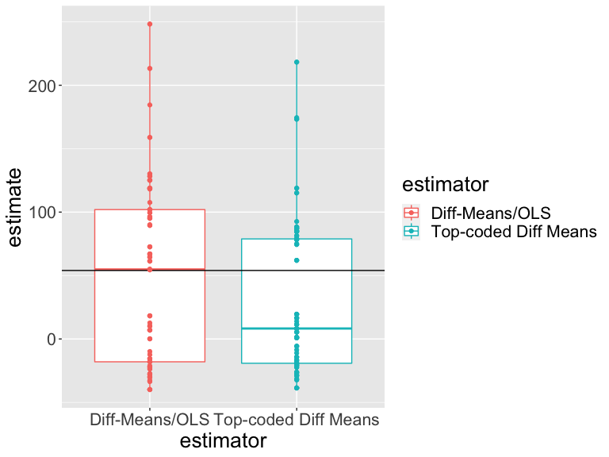
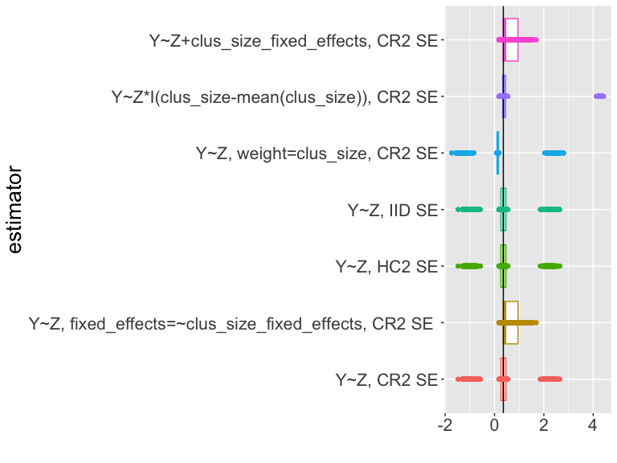
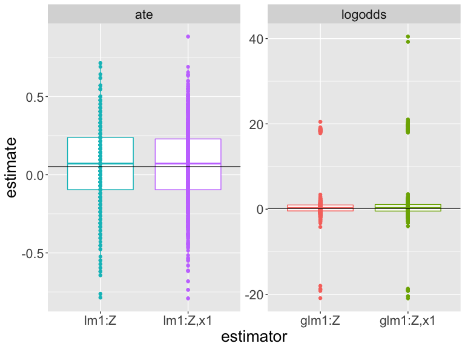

Estimando Estimandos con Estimadores
Fill In Your Name
03-09-2021
- Puntos Clave
- Recapitulación
- Estimandos y estimadores y promedios
- ¿Cómo podemos aprender sobre los efectos causales utilizando los datos observados?
- Un estimando y un estimador común: el efecto promedio del tratamiento y la diferencia de medias
- Paso 1 de la simulación: generar datos con un ATE conocido
- Primero: generar datos artificiales
- DeclareDesign
- DeclareDesign: creación de datos artificiales
- Utilizando DeclareDesign: definiendo estimandos y estimadores
- DeclareDesign: definiendo estimandos y estimadores
- DeclareDesign: definiendo estimandos y estimadores
- Simulemos una aleatorización
- Simulemos una aleatorización
- Ahora simulemos otra aleatorización y estimemos el ATE con los mismos estimadores
- ¿Cómo se comportan nuestros estimadores para este diseño en particular?
- ¿Cómo se comportan nuestros estimadores para este diseño en particular?
- ¿Cuál estimador se acerca más al valor real?
- ¿Cuál estimador se acerca más al valor real?
- Estimadores sesgados e insesgados
- Aleatorización en Bloques
- Los experimentos aleatorizados en bloques son una colección de mini-experimentos
- Los experimentos aleatorizados en bloques son una colección de mini-experimentos
- Estimando el ATE en experimentos aleatorizados en bloques
- El ATE en experimentos aleatorizados en bloques
- Estimando el ATE en experimentos aleatorizados en bloques
- Estimando el ATE en experimentos aleatorizados en bloques
- ¿Cuál estimador deberíamos usar?
- ¿Cuál estimador deberíamos usar?
- ¿Cuál estimador deberíamos usar?
- ¿Cuál estimador deberíamos usar?
- ¿Cuál estimador se acerca más al valor real?
- Aleatorización por conglomerados
- En los experimentos aleatorizados por conglomerados, las unidades se asignan al azar al tratamiento como grupo (conglomerado)
- Estimación del ATE en experimentos aleatorizados por conglomerados
- Estimación del error estándar para el ATE en experimentos aleatorizados por conglomerados
- Un ejemplo de estimación
- Un ejemplo de estimación
- Simular para evaluar estimadores y pruebas
- Simular para evaluar estimadores y pruebas
- Simular para evaluar estimadores y pruebas
- Resumen sobre estimación y pruebas en estudios aleatorizados por conglomerados
- Variables de Interés Binarias
- Variables de interés binarias: Definiendo datos en DeclareDesign para las simulaciones
- Variables de interés binarias: Definiendo datos en DeclareDesign para las simulaciones
- Variables de interés binarias: Estimandos I
- Variables de interés binarias: Estimandos II
- Variables de interés binarias: Estimandos III
- Un ejemplo de estimación I
- Un ejemplo de estimación II
- Un ejemplo de estimación III
- Un ejemplo de estimación: Los estimadores de Freedman I
- Un ejemplo de estimación: Los estimadores de Freedman I
- Un ejemplo del uso de DeclareDesign para evaluar estimadores I
- Un ejemplo del uso de DeclareDesign para evaluar estimadores II
- Usando simulación para evaluar estimadores
- ¿Cuál es el estimador está más cerca al valor real?
- Otros Temas sobre Estimación
- Conclusion
- Efectos causales que varian por grupos o por covariables
- Efectos causales cuando no controlamos la dosis
- Definiendo efectos causales I
- Definiendo efectos causales II
- Definición de efectos causales III
- Definición de efectos causales IV
- Definición de efectos causales V
- Defining causal effects VI
- Definiendo efectos causales VII
- Aprendiendo sobre el ITT I
- Aprendiendo sobre ITT II
- Aprendiendo sobre ITT III
- Aprendiendo sobre ITT IV
- El efecto causal promedio de los que cumplen I
- El efecto causal promedio del cumplidor II
- Cómo calcular el ITT y CACE/LATE I
- Cómo calcular el ITT y CACE/LATE II
- Cómo calcular el ITT y CACE/LATE III
- Resumen de diseños orientados al estímulo/cumplidor/dosis:
- Referencias
Puntos Clave
Puntos clave para la estimación I
Un efecto causal, \(\tau_i\), es una comparación de salidas potenciales no observadas para cada unidad \(i\), por ejemplo: \(\tau_{i} = Y_{i}(T_{i}=1) - Y_{i}(T_{i}=0)\) or \(\tau_{i} = \frac{Y_{i}(T_{i}=1)}{ Y_{i}(T_{i}=0)}\).
Para aprender sobre \(\tau_{i}\), podemos tratar a \(\tau_{i}\) como un estimando o una cantidad objetivo a ser estimada (discutido acá), o como una cantidad objetivo sobre la cual se plantearán hipótesis (sesión de pruebas hipótesis).
Hay muchas personas que se enfoncan en el efecto promedio del tratamiento (average treatment effect, ATE), \(\bar{\tau}=\sum_{i=1}^n\tau_{i}\), en parte, porque permite una estimación fácil.
Puntos clave para la estimación II
La clave para la estimación en la inferencia causal es elegir un estimando que permita aprender sobre alguna pregunta teórica o de políticas. Para esto, el ATE es una opción, pero otros estimandos comunes también incluyen el ITT, LATE/CACE, ATT o ATE para algún subgrupo (o incluso una diferencia de un efecto causal entre grupos).
- Un estimador es una receta para hacer una estimación sobre el valor de un estimando. Por ejemplo, la diferencia de medias observadas para \(m\) unidades tratadas es un estimador de \(\bar{\tau}\): \(\hat{\bar{\tau}} = \frac{\sum_{i=1}^n (T_i Y_i)}{m} - \frac{\sum_{i=1}^n ( ( 1 - T_i)Y_i)}{(n-m)}\).
Puntos clave para la estimación III
El error estándar de un estimador en un experimento aleatorio resume cómo variarían las estimaciones si se repitiera el experimento.
Usamos el error estándar para producir intervalos de confianza y valores p para que podamos comenzar con un estimador y terminamos con una prueba de hipótesis.
Diferentes aleatorizaciones producirán diferentes valores del mismo estimador que busca estimar el mismo estimando. Un error estándar resume esta variabilidad en un estimador.
Un intervalo de confianza del \(100 (1- \alpha)\)% es una colección de hipótesis que no se pueden rechazar a un nivel \(\alpha\). Es común reportar intervalos de confianza que contienen hipótesis sobre los valores de nuestro estimando y usar nuestro estimador como una estadística de prueba.
Puntos clave sobre la estimación IV
Los estimadores deberían:
evitar errores sistemáticos al estimar el estimando (ser insesgados);
varíar poco en las estimaciones de un experimento a otro. (ser precisos o eficientes) y
quizá idealmente converger al estimando a medida que se utiliza más información (ser consistentes).
Puntos clave sobre la estimación V
Analizar mientras se aleatoriza en cuanto a la estimación esto significa que (1) nuestros errores estándar deben medir la variabilidad de la aleatorización y (2) y el objetivo de nuestros estimadores deben ser estimandos definidos en términos de salidas potenciales.
No utlizamos variables de control cuando analizamos datos provenientes de experimentos aleatorios. Sin embargo estas covariables pueden hacer que nuestra estimación sea más precisa. Esto se denomina ajuste de covarianza (o ajuste de covariables). Tengan en cuenta que es diferente controlar en estudios observacionales a hacer ajuste de covarianza en experimentos aleatorios.
Recapitulación
Recapitulación: Efectos causales
Recapitulación: La inferencia causal se puede resumir en una comparación de salidas potenciales fijas no observadas.
Por ejemplo:
- la salida potencial, o posible, de la unidad \(i\) cuando se asigna al tratamiento, \(T_i = 1\) es \(Y_{i} (T_{i} = 1)\).
- la salida potencial, o posible, de la unidad \(i\) cuando se asigna al control, \(T_i = 0\) es \(Y_{i}(T_ {i} = 0)\)
La asignación al tratamiento, \(T_i\), tiene un efecto causal para la unidad \(i\) al que llamamos \(\tau_i\), si \(Y_{i}(T_{i} = 1) - Y_{i}(T_ {i} = 0) \ne 0\) o \(Y_{i}(T_ {i} = 1) \ne Y_{i}(T_ {i} = 0)\).
Estimandos y estimadores y promedios
¿Cómo podemos aprender sobre los efectos causales utilizando los datos observados?
Recordemos que podemos probar hipótesis sobre las dos salidas potenciales \(\{Y_{i}(T_ {i} = 1), Y_{i} (T_{i} = 0)\}\).
Podemos definir estimandos en términos de \(\{Y_ {i} (T_ {i} = 1), Y_ {i} (T_ {i} = 0) \}\) o \(\tau_i\), desarrollar estimadores para esos estimandos, y luego calcular los valores y los errores estándar para esos estimadores.
Un estimando y un estimador común: el efecto promedio del tratamiento y la diferencia de medias
Supongamos que estamos interesados en el ATE, o \(\bar {\tau} = \sum_{i = 1}^n \ tau_{i}\). ¿Cuál sería un buen estimador?
Dos candidatos:
La diferencia de medias: \(\hat{\bar{\tau}} = \frac{\sum_{i = 1}^n(T_i Y_i)}{m} - \frac{\sum_{i = 1}^n((1 - T_i) Y_i)}{n-m}\).
Una diferencia de medias después de recodificar el valor máximo de las observaciones \(Y_i\) (una una especie de media “truncada” (winsorized), con lo que se busca evitar que los valores extremos ejerzan demasiada influencia sobre nuestro estimador; se usa para aumentar la precisión).
¿Cómo saber cuál estimador es mejor para un diseño de investigación en particular?
¡Simulemos!
Paso 1 de la simulación: generar datos con un ATE conocido
Tengan en cuenta que necesitamos conocer las salidas potenciales y la asignación al tratamiento para saber si el estimador propuesto funciona bien.
El ATE real es 54En la vida real sólo podemos observar una realización de las salidas potenciales. Recuerden que cada unidad tiene su propio efecto bajo el tratamiento.
Primero: generar datos artificiales
La tabla de la diapositiva anterior fue generada en R con:
# Tenemos 10 unidades
N <- 10
# y0 es la salida potencial bajo el control
y0 <- c(0, 0, 0, 1, 1, 3, 4, 5, 190, 200)
# Para cada unidad el efecto del tratamiento es intrínseco
tau <- c(10, 30, 200, 90, 10, 20, 30, 40, 90, 20)
## y1 es la salida potencial bajo el tratamiento
y1 <- y0 + tau
# Dos bloques: a y b
block <- c("a", "a", "a", "a", "a", "a", "b", "b", "b", "b")
# Z es la asignación al tratamiento
# ( en l código usamos Z en vez de T)
Z <- c(0, 0, 0, 0, 1, 1, 0, 0, 1, 1)
# Y es la salida potencial observado
Y <- Z * y1 + (1 - Z) * y0
# Los datos
dat <- data.frame(Z = Z, y0 = y0, y1 = y1, tau = tau, b = block, Y = Y)
set.seed(12345)DeclareDesign
En DeclareDesign se pueden representar diseños de investigación en apenas unos pocos pasos:
# # Seleccionar solamente las salidas potenciales bajo control y tratamiento
small_dat <- dat[, c("y0", "y1")]
# El primer paso en DeclareDesign es declarar la población
pop <- declare_population(small_dat)
N <- nrow(pop)
# 5 unidades asignadas al tratamiento; DD hace asignación simple con p= .5
trt_assign <- declare_assignment(
Z = conduct_ra(N = N, m = 2),
legacy = FALSE
)
# El valor observado de Y es y1 si Z=1 y y0 si Z=0
pot_out <- declare_potential_outcomes(Y ~ Z * y1 + (1 - Z) * y0)
# Especificar variable de intenterés y asignación al tratamiento
reveal <- declare_reveal(Y, Z)
# El objeto de diseño de investigación básico
# incluye cuatro objetos
base_design <- pop + trt_assign + pot_out + revealDeclareDesign: creación de datos artificiales
DeclareDesign renombra y0 and y1 como Y_Z_0 y Y_Z_1 por defecto:
## Una simulación es una asignación aleatoria al tratamiento
sim_dat1 <- draw_data(base_design)
# Datos simulados (sólo las primeras 6 lineas)
head(sim_dat1) y0 y1 Z Y_Z_0 Y_Z_1 Y
1 0 10 0 0 10 0
2 0 30 1 0 30 30
3 0 200 0 0 200 0
4 1 91 0 1 91 1
5 1 11 0 1 11 1
6 3 23 1 3 23 23Utilizando DeclareDesign: definiendo estimandos y estimadores
El siguiente código no produce ninguna salida. Solo define las funciones, los estimadores y un estimando.
DeclareDesign: definiendo estimandos y estimadores
## El segundo estimador es la diferencia de medias recodificada (truncada)
diff_means_topcoded_fn <- function(data) {
data$rankY <- rank(data$Y)
## Reemplace el valor del máximo de Y por el segundo valor más alto de Y
data$newY <- with(
data,
ifelse(rankY == max(rankY), Y[rankY == (max(rankY) - 1)], Y)
)
obj <- lm_robust(newY ~ Z, data = data, se_type = "classical")
res <- tidy(obj) %>% filter(term == "Z")
return(res)
}
diff_means_topcoded <- declare_estimator(
handler = label_estimator(diff_means_topcoded_fn),
inquiry = estimandATE, label = "Top-coded Diff Means"
)DeclareDesign: definiendo estimandos y estimadores
A continuación presentamos cómo funcionan los estimadores en DD utilizando datos simulados.
inquiry estimand
1 ATE 54## Demuestra que los estimadores estiman
## Estimador1(diferencia de medias)
diff_means(sim_dat1)[-c(1, 2, 10, 11)] estimate std.error statistic p.value conf.low conf.high df
1 -23.62 66.18 -0.357 0.7304 -176.2 129 8 estimate std.error statistic p.value conf.low conf.high df
1 -22.37 64.44 -0.3472 0.7374 -171 126.2 8Simulemos una aleatorización
Recordemos cuál es el ATE real:
[1] 54Estos son los estimados de un experimento (una simulación de los datos):
## Dos formas de calcular el
# estimador de las diferencia de medias
est_diff_means_1 <- with(sim_dat1, mean(Y[Z == 1]) - mean(Y[Z == 0]))
est_diff_means_2 <- coef(lm_robust(Y ~ Z,
data = sim_dat1,
se = "classical"
))[["Z"]]
c(est_diff_means_1, est_diff_means_2)[1] -23.62 -23.62Simulemos una aleatorización
Estos son los estimados de un experimento (una simulación de los datos):
## dos formas de calcular la diferencia de medias acotada
sim_dat1$rankY <- rank(sim_dat1$Y)
sim_dat1$Y_tc <- with(sim_dat1, ifelse(rankY == max(rankY),
Y[rankY == (max(rankY) - 1)], Y
))
est_topcoded_1 <- with(sim_dat1, mean(Y_tc[Z == 1]) - mean(Y_tc[Z == 0]))
est_topcoded_2 <- coef(lm_robust(Y_tc ~ Z,
data = sim_dat1,
se = "classical"
))[["Z"]]
c(est_topcoded_1, est_topcoded_2)[1] -22.38 -22.37Ahora simulemos otra aleatorización y estimemos el ATE con los mismos estimadores
Ahora podemos hacer la estimación con los mismos estimadores utilizando una aleatorización diferente. Como pueden darse cuenta las respuestas difieren. Los estimadores están estimando el mismo estimador pero ahora están usando una aleatorización diferente.
# realizar una nueva asignacióna aleatoria en DeclareDesign
# esto produce un nuevo dataset con nuevas asignaciones
sim_dat1$rankY <- rank(sim_dat1$Y)
sim_dat1$Y_tc <- with(sim_dat1, ifelse(rankY == max(rankY),
Y[rankY == (max(rankY) - 1)], Y
))
est_topcoded_1 <- with(sim_dat1, mean(Y_tc[Z == 1]) - mean(Y_tc[Z == 0]))
est_topcoded_2 <- coef(lm_robust(Y_tc ~ Z,
data = sim_dat1,
se = "classical"
))[["Z"]]
c(est_topcoded_1, est_topcoded_2)[1] -22.38 -22.37¿Cómo se comportan nuestros estimadores para este diseño en particular?
Nuestras estimaciones varían según las aleatorizaciones. ¿Varían también nuestros dos estimadores de la misma manera?
## Combinar en un objeto diseño DeclareDesign
## Este tiene el diseño base, el estimando y luego nuestros dos estimadores
design_plus_ests <- base_design + estimandATE + diff_means +
diff_means_topcoded
## Correr 100 simulaciones (reasignaciones del tratamiento) y
## utilizar los dos estimadores (diff_means y diff_means_topcoded)
diagnosis1 <- diagnose_design(design_plus_ests,
bootstrap_sims = 0, sims = 100
)
sims1 <- get_simulations(diagnosis1)
head(sims1[, -c(1:6)]) estimate std.error statistic p.value conf.low conf.high df outcome
1 125.13 72.62 1.7230 0.1232 -42.34 292.6 8 Y
2 85.12 62.59 1.3601 0.2109 -59.21 229.5 8 newY
3 18.25 66.96 0.2726 0.7921 -136.15 172.7 8 Y
4 19.50 65.23 0.2989 0.7726 -130.92 169.9 8 newY
5 -28.00 66.39 -0.4217 0.6843 -181.10 125.1 8 Y
6 -26.75 64.66 -0.4137 0.6899 -175.85 122.4 8 newY¿Cómo se comportan nuestros estimadores para este diseño en particular?
Nuestras estimaciones varían según las aleatorizaciones. ¿Varían también nuestros dos estimadores de la misma manera?
¿Cómo interpretar esta gráfica?

¿Cuál estimador se acerca más al valor real?
Un criterio para elegir entre los estimadores es elegir el estimador que siempre esté más cerca del valor real , independientemente de la aleatorización específica.
Un estimador “insesgado” es aquel para el que el promedio de las estimaciones en los diseños repetidos es igual al valor real (o \(E_R (\hat {\bar{\tau}}) = \bar{\tau}\) ). Un estimador insesgado no tiene “ningún error sistemático” pero tampoco nos garantiza que vamos a estar cerca del valor real.
Una cantidad para medir “la cercanía” al valor real es el error cuadrático medio de la raíz (RMSE, por sus siglas en inglés), que registra las distancias cuadráticas entre la verdad y las estimaciones individuales.
¿Cuál estimador se acerca más al valor real?
¿Cuál estimador es mejor? (Uno está más cerca del valor real en promedio (RMSE) y es más preciso. El otro no tiene un error sistemático: es insesgado).
| Estimator | Bias | RMSE | SD Estimate | Mean Se | Power |
|---|---|---|---|---|---|
| Diff-Means/OLS | -4.27 | 71.39 | 71.62 | 66.56 | 0.09 |
| Top-coded Diff Means | -24.39 | 64.52 | 60.04 | 64.49 | 0.03 |
Estimadores sesgados e insesgados
Resumen:
Siempre podemos decidir sobre los estimandos y estimadores
Un buen estimador debe funcionar bien independientemente de la aleatorización particular que se esté considerando de un diseño dado. El que funcione bien puede significar que sea “insesgado” y/o un “error cuadrático medio bajo” (o “consistente”, lo que quiere decir que a medida que el tamaño de la muestra aumenta el estimador se acerca más al valor real).
Las simulaciones nos permiten saber qué tan bien trabaja un estimador para un estudio dado.
Aleatorización en Bloques
Los experimentos aleatorizados en bloques son una colección de mini-experimentos
¿Cómo definir el estimando para el ATE en un experimento aleatorizado en bloques?
Si pensamos en el ATE a nivel de la unidad: \((1/N) \sum_{i=1}^N y_{i,1} - y_{i,0}\), podríamos re-expresar esta cantidad equivalentemente utilizando el ATE del bloque \(j\), \(ATE_j\), como a continuación:
\[ ATE = \frac{1}{J}\sum^J_{j=1} \sum^{N_j}_{i=1} \frac{y_{i,1} - y_{i,0}}{N_j} = \sum^J_{j=1} \frac{N_j}{N} ATE_j \]
Y sería apenas lógico estimar esta cantidad reemplazando lo que sí podemos calcular: \(\widehat{ATE} = \displaystyle\sum^J_{j=1} \frac{N_j}{N} \widehat{ATE}_j\)
Los experimentos aleatorizados en bloques son una colección de mini-experimentos
Podemos definir el error estándar del estimador promediando también los errores estándar dentro de cada bloque (si nuestros bloques son lo suficientemente grandes)
\(SE(\widehat{ATE}) = \sqrt{\sum^J_{j=1} (\frac{N_{j}}{N})^2SE^2(\widehat{ATE}_j)}\)
Estimando el ATE en experimentos aleatorizados en bloques
Una opción de estimación es simplemente reemplazar \(ATE_j\) con \(\widehat{ATE}\):
Z
b 0 1
a 4 2
b 2 2Como podemos ver, tenemos 6 unidades en el bloque a, 2 de los cuales son asignadas al tratamiento, y 4 unidades en el bloque b, 2 de las cuales son asignadas al tratamiento.
El ATE en experimentos aleatorizados en bloques
Una opción de estimación es simplemente reemplazar \(ATE_j\) con \(\widehat{ATE}\):
datb <- dat %>%
group_by(b) %>%
summarize(
nb = n(), pb = mean(Z), estateb = mean(Y[Z == 1]) - mean(Y[Z == 0]),
ateb = mean(y1 - y0), .groups = "drop"
)
datb# A tibble: 2 × 5
b nb pb estateb ateb
<chr> <int> <dbl> <dbl> <dbl>
1 a 6 0.333 16.8 60
2 b 4 0.5 246. 45[1] 54[1] 54Estimando el ATE en experimentos aleatorizados en bloques
Otra opción es estimar el ATE total ajustando los pesos de acuerdo al tamaño de los bloque:
## Showing that difference_in_means uses the blocksize weight.
e1 <- difference_in_means(Y ~ Z, blocks = b, data = dat)
e2 <- with(datb, sum(estateb * (nb / sum(nb))))
c(coef(e1)[["Z"]], e2)[1] 108.2 108.2Estimando el ATE en experimentos aleatorizados en bloques
Tenga en cuenta que esto no es lo mismo que lo siguiente:
[1] 131.8[1] 114.8¿En qué se diferencian? (El primero ignora los bloques. El segundo usa un conjunto de pesos diferente, creado usando las variables de “efectos fijos” o “indicadores” o variables “dummy”)
¿Cuál estimador deberíamos usar?
Cada uno de los tres estimadores produce una estimación diferente (asumiendo que todos intentan estimar el mismo estimando):
[1] 108.2 131.8 114.8¿Cuál estimador deberíamos usar para este diseño? Podemos responder esta pregunta simulando en DeclareDesign.
## declarar un nuevo diseño base que incluya el indicador de bloque b
base_design_blocks <-
# declarar la población
declare_population(dat[, c("b", "y0", "y1")]) +
# Indicarle a DD que b son bloques y
# 2 unidades son tratadas en cada bloque
declare_assignment(
Z = conduct_ra(N = N, m = 2, blocks = b),
Z_cond_prob =
obtain_condition_probabilities(assignment = Z, m = 2)
) +
# relación entre salidas potenciales y variables de interés
declare_potential_outcomes(Y ~ Z * y1 + (1 - Z) * y0) +
# variable de interés observada y asignación al tratamiento
declare_reveal(Y, Z)¿Cuál estimador deberíamos usar?
# El estimando es el efecto promedio del tratamiento
estimandATEb <- declare_inquiry(ATE = mean(Y_Z_1 - Y_Z_0))
# tres estimadores distintos
est1 <- declare_estimator(Y ~ Z,
inquiry = estimandATEb, model = lm_robust,
label = "Ignores Blocks"
)
est2 <- declare_estimator(Y ~ Z,
inquiry = estimandATEb, model = difference_in_means, blocks = b,
label = "DiM: Block-Size Weights"
)
est3 <- declare_estimator(Y ~ Z,
inquiry = estimandATEb, model = lm_robust,
weights = (Z / Z_cond_prob) + ((1 - Z) / (Z_cond_prob)),
label = "LM: Block Size Weights"
)¿Cuál estimador deberíamos usar?
# dos estimadores más
est4 <- declare_estimator(Y ~ Z,
inquiry = estimandATEb,
model = lm_robust, fixed_effects = ~b, label = "Precision Weights"
)
est5 <- declare_estimator(Y ~ Z + b,
inquiry = estimandATEb,
model = lm_robust, label = "Precision Weights (LSDV)"
)
# El nuevo objeto del diseño tiene
# el diseño base, el estimado y cinco estimadores
design_blocks <- base_design_blocks + estimandATEb +
est1 + est2 + est3 + est4 + est5Lo que haremos ahora es correr 10,000 simulaciones (el tratamiento se reasigna 10,000 veces) y resumir las estimaciones producidas por cada uno de estos cinco estimadores.
¿Cuál estimador deberíamos usar?
¿Cómo interpretar esta gráfica? 
¿Cuál estimador se acerca más al valor real?
¿Cuál estimador funciona mejor para este datos y diseño en particular?
| Estimator | Bias | RMSE | SD Est | Mean SE | Power | Coverage |
|---|---|---|---|---|---|---|
| DiM: Block-Size Weights | -0.63 | 53.08 | 53.11 | 51.90 | 0.22 | 0.77 |
| Ignores Blocks | 14.48 | 55.23 | 53.33 | 60.79 | 0.10 | 0.97 |
| LM: Block Size Weights | 14.48 | 55.23 | 53.33 | 60.79 | 0.10 | 0.97 |
| Precision Weights | -1.02 | 55.39 | 55.40 | 56.96 | 0.11 | 0.92 |
| Precision Weights (LSDV) | -1.02 | 55.39 | 55.40 | 56.96 | 0.11 | 0.92 |
Como pueden notar la cobertura no es del 95% en todos los casos. La razón por la que usamos 10,000 simulaciones es que el error de simulación es de alrededor de \(\pm 2 \sqrt{p (1-p)/10000}\) o, por ejemplo, para una cobertura de .93, una simulación diferente podría fácilmente haber producido 0.9249 o 0.9351 (o en raras ocasiones habría retornado coberturas que se encuentren fuera de ese rango sólo por chance).
Aleatorización por conglomerados
En los experimentos aleatorizados por conglomerados, las unidades se asignan al azar al tratamiento como grupo (conglomerado)
- Ejemplo 1: una intervención se asigna al azar entre vecindarios, lo que quiere decir que todos los hogares de un vecindario se asignarán a la misma condición de tratamiento, pero a diferentes vecindarios se les asignarán diferentes condiciones de tratamiento.
- Ejemplo 2: una intervención se asigna al azar entre personas y después del tratamiento se miden datos de cada persona cuatro veces, lo que quiere decir que nuestro conjunto de datos contiene cuatro filas por persona.
- Esto no es un ejemplo 1: Se seleccionan vecindarios para un estudio. Dentro de cada vecindario, aproximadamente la mitad de las personas están asignadas al tratamiento y la otra mitad al control. (¿Qué tipo de estudio es este? No es un estudio aleatorizado por conglomerados).
- Esto no es un ejemplo 2: una intervención se asigna al azar a algunos vecindarios y a otros no, entre las variables de interés se encuentran la confianza en el gobierno a nivel del vecindario y el área total de tierra en el vecindario destinada a jardines. (A veces, un experimento aleatorizado por conglomerados se puede convertir en un experimento aleatorizado simple. O puede contener más de un posible forma para hacer análisis e interpretación).
¿En que podrían la distribución de una estadística de prueba y estimadores diferenciarse de un experimento en el que unidades individuales (y no conglomerados) son aletorizados?
Estimación del ATE en experimentos aleatorizados por conglomerados
Problemas de sesgo en experimentos aleatorizados por conglomerados:
Cuando los conglomerados son del mismo tamaño, el estimador de diferencia de medias que usamos habitualmente es insesgado.
Pero hay que tener cuidado cuando los conglomerados tienen un número diferente de unidades o si hay muy pocos conglomerados ya que los efectos del tratamiento podrían estar correlacionados con el tamaño del conglomerado.
Cuando el tamaño del conglomerado está relacionado con las salidas potenciales, el estimador habitual de diferencias de medias es sesgado. https://declaredesign.org/blog/bias-cluster-randomized-trials.html
Estimación del error estándar para el ATE en experimentos aleatorizados por conglomerados
Inferencias estadísticas engañosas: En general, el error estándar usado por defecto subestima la precisión en dichos diseños y por lo tanto produce pruebas con tasas de falsos positivos demasiado altas (o, equivalentemente, la cobertura de los intervalos de confianza puede ser demasiado baja).
Los “errores estándar robustos para conglomerados” implementados en softwares comunes funcionan bien cuando el número de conglomerados es alto (más de 50 en algunos casos).
Los errores estándar para conglomerados predeterminados en
lm_robust(SE deCR2) funcionan mejor que los que disponibles en STATA (al momento en el que se escribe esta presentación).El wild-bootstrap ayuda a controlar las tasas de error, pero se pierde poder estadístico mucho más de lo que quizás sea necesario para un estudio aleatorizado por conglomerados donde se pueden hacer inferencias directamente.
En caso de no estar seguro, se pueden calcular valores \(p\) mediante simulación directa (inferencia directa basada en la aleatorización) para evaluar si las estimaciones robustas para conglomerados son correctas
En general, en caso de que se tenga alguna inquietud o duda es conveniente simular para estudiar el desempeño de sus estimadores, pruebas e intervalos de confianza.
Un ejemplo de estimación
Suponga que tenemos datos provenientes 10 conglomerados con 100 personas (en 2 conglomerados) o 10 personas por grupo (en 8 conglomerados). El tamaño total de los datos es 280.
# A tibble: 6 × 6
# Groups: clus_id [2]
clus_id indiv Y_Z_0 Y_Z_1 Z Y
<chr> <chr> <dbl> <dbl> <int> <dbl>
1 01 010 4.51 4.61 0 4.51
2 01 035 4.63 4.73 0 4.63
3 01 068 4.76 4.86 0 4.76
4 03 205 3.13 4.13 1 4.13
5 03 206 2.41 3.41 1 3.41
6 03 208 2.95 3.95 1 3.95Un ejemplo de estimación
¿Cuál estimador deberíamos utilizar? ¿Cuál prueba deberíamos utilizar? ¿En que nos deberíamos basar para elegir entre alternativas?
lmc1 <- lm_robust(Y ~ Z, data = dat1)
lmc2 <- lm_robust(Y ~ Z, clusters = clus_id, data = dat1)
lmc3 <- lm_robust(Y ~ Z + cl_sizeF, clusters = clus_id, data = dat1)
tidy(lmc1)[2, ] term estimate std.error statistic p.value conf.low conf.high df outcome
2 Z 0.3024 0.1207 2.504 0.01284 0.06471 0.5401 278 Y term estimate std.error statistic p.value conf.low conf.high df outcome
2 Z 0.3024 1.079 0.2804 0.796 -2.969 3.574 3.282 Y term estimate std.error statistic p.value conf.low conf.high df outcome
2 Z 0.3024 0.306 0.9882 0.4386 -1.194 1.799 1.769 YSimular para evaluar estimadores y pruebas
Si observan el código de las diapositivas, verán que simulamos el diseño 5000 veces, calculando cada vez una estimación y un intervalo de confianza para diferentes estimadores del ATE.
¿Qué podemos aprender de esta tabla? Cobertura? sd_estimate versus mean_se).
| estimator | coverage | sd_estimate | mean_se |
|---|---|---|---|
| Y~Z, CR2 | 0.58 | 1.06 | 0.73 |
| Y~Z, cl_size fe, CR2 | 0.75 | 0.36 | 0.30 |
| Y~Z, HC2 | 0.58 | 1.06 | 0.13 |
| Y~Z, IID | 0.58 | 1.06 | 0.12 |
| Y~Z, weight=clus_size, CR2 | 0.58 | 1.21 | 0.86 |
| Y~Z*I(cl_size-mean(cl_size)), CR2 | 0.77 | 1.52 | 0.06 |
| Y~Z+cl_sizeF, CR2 | 0.75 | 0.36 | 0.30 |
Simular para evaluar estimadores y pruebas
¿Qué podemos aprender de esta tabla? (¿Sesgo? ¿Cercanía al valor real?)
| estimator | bias | rmse |
|---|---|---|
| Y~Z, CR2 | 0.112 | 1.067 |
| Y~Z, cl_size fe, CR2 | 0.275 | 0.449 |
| Y~Z, HC2 | 0.112 | 1.067 |
| Y~Z, IID | 0.112 | 1.067 |
| Y~Z, weight=clus_size, CR2 | -0.039 | 1.212 |
| Y~Z*I(cl_size-mean(cl_size)), CR2 | 0.719 | 1.682 |
| Y~Z+cl_sizeF, CR2 | 0.275 | 0.449 |
Simular para evaluar estimadores y pruebas
¿Cómo podemos interpretar esta gráfica?

Resumen sobre estimación y pruebas en estudios aleatorizados por conglomerados
Los ensayos aleatorios por conglomerados conllevan una serie de dificultades especiales para las formas estándar de estimación y prueba.
Si la aleatorización se hace al nivel del conglomerado, la incertidumbre que surge de la aleatorización es también a nivel del conglomerado.
Cuando tenemos suficientes conglomerados, los errores estándar “robustos para conglomerados” pueden ayudarnos a producir intervalos de confianza con la cobertura correcta. Los errores estándar robustos para conglomerados requiere que haya muchos conglomerados..
Si el tamaño del conglomerado (o alguna característica) está relacionado con el tamaño del efecto, entonces la estimación puede estar sesgada (y necesitamos ajustar de alguna manera).
Variables de Interés Binarias
Variables de interés binarias: Definiendo datos en DeclareDesign para las simulaciones
# tamaño de la poblacion
N <- 20
# declarar la població
thepop_bin <- declare_population(
N = N, x1 = draw_binary(prob = .5, N = N),
x2 = rnorm(N)
)
# declarar las salidas potenciales
thepo_bin <- declare_potential_outcomes(Y ~ rbinom(
n = N, size = 1,
prob = 0.5 + 0.05 * Z + x1 * .05
))
# dos cantidades objetivo posibles:
# difference in means or difference in log-odds
thetarget_ate <- declare_inquiry(ate = mean(Y_Z_1 - Y_Z_0))
thetarget_logodds <- declare_inquiry(
logodds = log(mean(Y_Z_1) / (1 - mean(Y_Z_1))) -
log(mean(Y_Z_0) / (1 - mean(Y_Z_0)))
)Variables de interés binarias: Definiendo datos en DeclareDesign para las simulaciones
# declarar como se asigna el tratamiento
# m unidades se asignan a los niveles del tratamiento Z
theassign_bin <- declare_assignment(Z = conduct_ra(N = N, m = floor(N / 3)))
# declarar cuales variables se revelan para distintos niveles de Z
thereveal_bin <- declare_reveal(Y, Z)
# reuniendo todo: población, salidas potenciales, asignación,
## variable Y conectada a Z
des_bin <- thepop_bin + thepo_bin + theassign_bin + thereveal_bin
# una realización de los datos (se asigna el tratamiento al azar una vez)
set.seed(12345)
dat2 <- draw_data(des_bin)Variables de interés binarias: Estimandos I
¿Cómo interpretar las siguientes cantidades reales o estimandos?(Y_Z_1, Y_Z_0 son salidas potenciales, Y es observada, x1, x2 son covariables, Z es la asignación al tratamiento. En este caso \(N\)=20.
ID x1 x2 Y_Z_0 Y_Z_1 Z
1 01 1 -0.1162 0 1 0
2 02 1 1.8173 0 1 1
3 03 1 0.3706 0 1 0
4 04 1 0.5202 1 1 0
5 05 0 -0.7505 1 0 1
6 06 0 0.8169 0 1 0Variables de interés binarias: Estimandos II
¿Cómo interpretar las siguientes cantidades reales o estimandos?(Y_Z_1, Y_Z_0 son salidas potenciales, Y es observada, x1, x2 son covariables, Z es la asignación al tratamiento. En este caso \(N\)=20.
ate_bin <- with(dat2, mean(Y_Z_1 - Y_Z_0))
bary1 <- mean(dat2$Y_Z_1)
bary0 <- mean(dat2$Y_Z_0)
diff_log_odds_bin <- with(
dat2,
log(bary1 / (1 - bary1)) - log(bary0 / (1 - bary0))
)
c(
bary1 = bary1, bary0 = bary0, true_ate = ate_bin,
true_diff_log_odds = diff_log_odds_bin
) bary1 bary0 true_ate true_diff_log_odds
0.55 0.55 0.00 0.00 Variables de interés binarias: Estimandos III
¿Quiere estimar la diferencia en logg-odds?
\[\begin{equation} \delta = \log \frac{\bar{y}_{1}}{1-\bar{y}_{1}} - \log \frac{ \bar{y}_0}{1- \bar{y}_0} \end{equation}\]
¿o la diferencia en proporciones?
\[\begin{equation} \bar{\tau} = \bar{y}_{1} - \bar{y}_0 \end{equation}\]
Recuerde que \(\bar{y}_1\) que es la proporción de \(y_{1}=1\) en los datos.
Freedman (2008b) nos muestra que el estimador del coeficiente logit es un estimador sesgado del estimando de la diferencia en los log-odds. Así mismo también presenta un estimador insesgado para ese mismo estimando.
Es claro que la diferencia de proporciones en la muestra debería ser un estimador insesgado de la diferencia de proporciones
Un ejemplo de estimación I
¿Cómo debemos interpretar las siguientes estimaciones? (¿Cuáles son los supestos que el estimador de diferencia de medias requiere? ¿Cuáles son los supestos que el estimador de la regresión logística requiere?)
lmbin1 <- lm_robust(Y ~ Z, data = dat2)
glmbin1 <- glm(Y ~ Z, data = dat2, family = binomial(link = "logit"))
tidy(lmbin1)[2, ] term estimate std.error statistic p.value conf.low conf.high df outcome
2 Z -0.4048 0.2159 -1.875 0.07716 -0.8584 0.04884 18 Y# A tibble: 1 × 5
term estimate std.error statistic p.value
<chr> <dbl> <dbl> <dbl> <dbl>
1 Z -1.90 1.22 -1.55 0.120Un ejemplo de estimación II
¿Qué hay con las covariables? ¿Por qué usamos covariables?
lmbin2 <- lm_robust(Y ~ Z + x1, data = dat2)
glmbin2 <- glm(Y ~ Z + x1, data = dat2, family = binomial(link = "logit"))
tidy(lmbin2)[2, ] term estimate std.error statistic p.value conf.low conf.high df outcome
2 Z -0.4058 0.2179 -1.862 0.07996 -0.8656 0.05398 17 Y# A tibble: 1 × 5
term estimate std.error statistic p.value
<chr> <dbl> <dbl> <dbl> <dbl>
1 Z -1.90 1.22 -1.55 0.120Un ejemplo de estimación III
Ahora comparemos nuestras estimaciones
c(
dim = coef(lmbin1)[["Z"]],
dim_x1 = coef(lmbin2)[["Z"]],
glm = coef(glmbin1)[["Z"]],
glm_x1 = coef(glmbin2)[["Z"]]
) dim dim_x1 glm glm_x1
-0.4048 -0.4058 -1.8971 -1.9025 Un ejemplo de estimación: Los estimadores de Freedman I
Sin covariables:
freedman_plugin_estfn1 <- function(data) {
glmbin <- glm(Y ~ Z, data = dat2, family = binomial(link = "logit"))
preddat <- data.frame(Z = rep(c(0, 1), nrow(dat2)))
preddat$yhat <- predict(glmbin, newdata = preddat, type = "response")
bary1 <- mean(preddat$yhat[preddat$Z == 1])
bary0 <- mean(preddat$yhat[preddat$Z == 0])
diff_log_odds <- log(bary1 / (1 - bary1)) - log(bary0 / (1 - bary0))
return(data.frame(estimate = diff_log_odds))
}Un ejemplo de estimación: Los estimadores de Freedman I
Con covariables:
freedman_plugin_estfn2 <- function(data) {
N <- nrow(data)
glmbin <- glm(Y ~ Z + x1, data = data, family = binomial(link = "logit"))
preddat <- data.frame(Z = rep(c(0, 1), each = N))
preddat$x1 <- rep(data$x1, 2)
preddat$yhat <- predict(glmbin, newdata = preddat, type = "response")
bary1 <- mean(preddat$yhat[preddat$Z == 1])
bary0 <- mean(preddat$yhat[preddat$Z == 0])
diff_log_odds <- log(bary1 / (1 - bary1)) - log(bary0 / (1 - bary0))
return(data.frame(estimate = diff_log_odds))
}Ahora comparemos las estimaciones de los seis estimadores diferentes
dim dim_x1 glm glm_x1 freedman freeman_x1
-0.4048 -0.4058 -1.8971 -1.9025 -1.8971 -1.9020 Un ejemplo del uso de DeclareDesign para evaluar estimadores I
# declarar 4 estimadores para DD
# primer estimador: regresión linear con ATE como cantidad objetivo
estb1 <- declare_estimator(Y ~ Z,
model = lm_robust, label = "lm1:Z",
estimand = thetarget_ate
)
# segundo estimador: regresión linear con covariables con ATE cantidad objetivo
estb2 <- declare_estimator(Y ~ Z + x1,
model = lm_robust, label = "lm1:Z,x1",
estimand = thetarget_ate
)
# tercer estimador: regresión logística con log odds cantidad objetivo
estb3 <- declare_estimator(Y ~ Z,
model = glm, family = binomial(link = "logit"),
label = "glm1:Z", estimand = thetarget_logodds
)
# cuadro estimador: regresión logística con covaribles con log odds cantidad objetivo
estb4 <- declare_estimator(Y ~ Z + x1,
model = glm, family = binomial(link = "logit"),
label = "glm1:Z,x1", estimand = thetarget_logodds
)Un ejemplo del uso de DeclareDesign para evaluar estimadores II
Usando simulación para evaluar estimadores
¿Cómo interpretar esta gráfica? (Las diferencias en escala dificultan interpretación.

¿Cuál es el estimador está más cerca al valor real?
¿Cuál estimador funciona mejor para este diseño y estos datos?
| est | estimand | bias | rmse | power | coverage | sd_est | mean_se |
|---|---|---|---|---|---|---|---|
| glm1:Z | logodds | 0.691 | 4.099 | 0.023 | 0.995 | 4.226 | 154.088 |
| glm1:Z,x1 | logodds | 0.850 | 4.815 | 0.016 | 0.993 | 4.934 | 249.506 |
| lm1:Z | ate | 0.007 | 0.182 | 0.084 | 0.970 | 0.239 | 0.239 |
| lm1:Z,x1 | ate | 0.010 | 0.189 | 0.082 | 0.970 | 0.245 | 0.247 |
Otros Temas sobre Estimación
Ajuste de covarianza: Estimandos
En general, simplemente “controlar” produce un estimador sesgado del estimando de ATE o ITT. Por ejemplo, Lin (2013) y Freedman (2008a), Lin (2013) muestran cómo reducir este sesgo y, lo que es más importante, este sesgo tiende a ser pequeño a medida que aumenta el tamaño de la muestra.
Conclusion
Reflexiones finales sobre los conceptos básicos de la estimación
Los estimandos causales contrafactuales son funciones de salidas potenciales no observadas
Los estimadores son recetas o fórmulas computacionales que utilizan datos observados para aprender sobre un estimando.
Los buenos estimadores producen estimaciones cercanas al valor real del estimando.
(Contectado los conceptos de estimación y pruebas) Los errores estándar de los estimadores nos permiten calcular intervalos de confianza y valores \(p\). Ciertos estimadores tienen errores estándar más grandes o más pequeños (o más o menos correctos).
Puede evaluar la utilidad de un estimador elegido para un estimador dado utilizando una simulación.
Efectos causales que varian por grupos o por covariables
Efectos que varian de acuerdo al grupo II
Si nuestra teoría sugiere que los efectos varian de acuerdo a los grupos, ¿qué podemos hacer para evaluar la evidencia a favor o en contra de dichas teorias?
Podemos diseñar una evaluación de esta teoría creando un estudio aleatorizado en bloque; los bloques estarían definidos de acuerdo a los grupos relevantes según la teoría.
Podemos planificar para hacer dicha evaluación mediante (1)
preinscripción específica del análisis de subgrupos (si bloqueamos o no ese grupo en la fase de diseño) y (2) asegurarse de medir la pertenencia al grupo durante la recolección de datos inicial previa al tratamiento
Efectos que varian de acuerdo al grupo II
- Si no lo hemos planeado con anticipación, los análisis específicos de subgrupos pueden ser útiles como exploraciones, pero no deben entenderse como confirmatorias: también probar demasiadas hipótesis puede inflar la tasa de falsos positivos.
- No debemos utilizar grupos creados por el tratamiento. (Esto sería “análisis de mediación” o “condicionamiento de variables posteriores al tratamiento” y a esto le dedicamos un módulo propio).
Efectos causales cuando no controlamos la dosis
Definiendo efectos causales I
Supongamos que vamos a realizar un experimento de comunicación puerta a puerta en el que algunas hogares se asignan al azar para recibir una visita. Tenga en cuenta que ahora usamos \(Z\) y \(d\) en lugar de \(T\).
- \(Z_i\) es la asignación aleatoria a una visita (\(Z_i = 1\)) o no (\(Z_i = 0\)).
- \(d_ {i, Z_i = 1} = 1\) quiere decir que la persona \(i\) abre la puerta para tener una conversación cuando se le asigna una visita.
- \(d_{i, Z_i = 1} = 0\) quiere decir que la persona \(i\) no abre la puerta conversar cuando se le asigna una visita.
- Abrir la puerta es un resultado del tratamiento.
Definiendo efectos causales II
\(y_{i, Z_i = 1, d_ {i, Z_i = 1} = 1}\) es el resultado potencial para las personas a las que se les asignó una visita y que sí abrieron la puerta. (“los que cumplen” o “los que siempre toman”)
\(y_{i, 0, d_{i, 0} = 1}\) es la salida potencial para las personas a las que no se les asignó una visita y abren la puerta. (“los que desafian” o “los que siempre lo toman”)
\(y_{i, 0, d_{i, 0} = 0}\) es el resultado potencial para las personas a las que no se les asignó una visita y que no abren la puerta. (“los que cumplen” o “los que nunca lo toman”)
Definición de efectos causales III
También podríamos utilizar \(y_{i, Z_i = 0, d_ {i, Z_i = 1} = 1}\) para definir las personas a las que no se les asignó una visita pero que habrían abierto la puerta si se les hubiera asignado una visita, etc.
En este caso, podemos simplificar nuestras salidas potenciales:
- \(y_{i,0, d_{i,1}=1} = y_{i,0, d_{i,1}=0} = y_{i,0, d_{i,0}=0}\) porque su resultado es el mismo independientemente de que abra o no la puerta.
Definición de efectos causales IV
Podemos simplificar las formas en que las personas reciben una dosis del tratamiento como tal (donde \(d\) minúscula refleja la idea de que si alguien abre la puerta cuando se visita o no es un atributo fijo, como una salida potencial).
- \(Y\): variable de interés (\(y_ {i, Z}\) o \(y_ {i, Z_i = 1}\) para la salida potencial de tratamiento por persona $ i $, fijo)
- \(X\): covariable/variable de referencia
- \(Z\): asignación del tratamiento (\(Z_i = 1\) si se asigna a una visita, \(Z_i = 0\) si no se asigna a una visita)
- \(D\): tratamiento recibido (\(D_i = 1\) si contesta el teléfono, \(D_i = 0\) si la persona \(i\) dd no abrir la puerta) (usando \(D\) aquí porque \(D_i = d_ {i, 1} Z_ {i} + d_ {i, 0} (1-Z_i)\))
Definición de efectos causales V
Tenemos dos efectos causales relacionados a \(Z\): \(Z \rightarrow Y\) (\(\delta\), ITT, ITT\(_Y\)) y \(Z\rightarrow D\) (GG llama a esto ITT\(_D\)).
Y diferentes tipos de personas pueden reaccionar de manera diferente cuando se trata de variar la dosis junto con el instrumento.
Defining causal effects VI
\(ITT=ITT_Y=\delta= \bar{y}_{Z=1} - \bar{y}_{Z=0}\).
Pero, en este diseño, \(\bar{y}_{Z = 1} = \bar{y}_{1}\) está dividido en partes: el valor de la variable de interés para aquellos que abrieron la puerta (los que cumplen, los que siempre lo toman y los que desafian). Utilizamos \(p_C\) para definir la proporción de cumplidores en el estudio.
\[\begin{equation} \bar{y}_{1}=(\bar{y}_{1}|C)p_C + (\bar{y}_{1}|A)p_A + (\bar{y}_1|N)p_N + (\bar{y}_1|D)p_D. \end{equation}\]
Y \(\bar{y}_{0}\) también se divide en partes
\[\begin{equation} \bar{y}_{0}=(\bar{y}_{0}|C)p_C + (\bar{y}_{1}|A)p_A + (\bar{y}_{0}|N)p_N + (\bar{y}_0|D)p_D. \end{equation}\]
Definiendo efectos causales VII
Entonces, el ITT es en sí mismo una combinación de los efectos de \(Z\) en \(Y\) dentro de estos diferentes grupos (puede imaginar que los sustituye y luego los reorganiza para que podamos tener un grupo de ITTs, uno para cada tipo de sujeto). Pero igual podemos estimar el ITT porque tenemos estimadores insesgados de \(\bar{y}_1\) y \(\bar{y}_0\) dentro de cada tipo.
Aprendiendo sobre el ITT I
Primero podemos aprender sobre el efecto de la política en sí. Para calcular el ITT, no es necesario que consideremos todos los tipos de sujetos que vimos previamente. No tenemos sujetos que desafian (\(p_D = 0\)) y sabemos que el ITT tanto para los que siempre toman como para los que nunca toman es 0.
\[\begin{equation} \bar{y}_{1}=(\bar{y}_{1}|C)p_C + (\bar{y}_{1}|A)p_A + (\bar{y}_1|N)p_N \end{equation}\]
\[\begin{equation} \bar{y}_{0}=(\bar{y}_{0}|C)p_C + (\bar{y}_{0}|A)p_A + (\bar{y}_{0}|N)p_N \end{equation}\]
Aprendiendo sobre ITT II
Primero podemos aprender sobre el efecto de la política en sí. Para calcular el ITT, no es necesario que consideremos todos los tipos de sujetos que vimos previamente. En este caso, no tenemos sujetos que desafian (\(p_D = 0\)) y sabemos que el ITT tanto para los que siempre toman como para los que nunca toman es 0.
\[\begin{align} ITT = & \bar{y}_{1} - \bar{y}_{0} \\ = & ( (\bar{y}_{1}|C)p_C + (\bar{y}_{1}|A)p_A + (\bar{y}_1|N)p_N ) - \\ & ( (\bar{y}_{0}|C)p_C + (\bar{y}_{0}|A)p_A + (\bar{y}_{0}|N)p_N ) \\ \intertext{Recopilar cada tipo de sujeto para tener un ITT para cada uno.} = & ( (\bar{y}_{1}|C)p_C - (\bar{y}_{0}|C)p_C ) + ( (\bar{y}_{1}|A)p_A - (\bar{y}_{1}|A)p_A ) + \\ & ( (\bar{y}_1|N)p_N - (\bar{y}_{0}|N)p_N ) \\ = & \left( (\bar{y}_{1}|C) - (\bar{y}_{0}|C) \right)p_C + \\ & \left( (\bar{y}_{1}|A)- (\bar{y}_{0}|A) \right)p_A + \left( (\bar{y}_1|N) - (\bar{y}_{0}|N) \right)p_N \end{align}\]
Aprendiendo sobre ITT III
\[\begin{align} ITT = & \bar{y}_{1} - \bar{y}_{0} \\ = & ( (\bar{y}_{1}|C)p_C + (\bar{y}_{1}|A)p_A + (\bar{y}_1|N)p_N ) - \\ & ( (\bar{y}_{0}|C)p_C + (\bar{y}_{0}|A)p_A + (\bar{y}_{0}|N)p_N ) \\ = & ( (\bar{y}_{1}|C)p_C - (\bar{y}_{0}|C)p_C ) + ( (\bar{y}_{1}|A)p_A - (\bar{y}_{1}|A)p_A ) + \\ & ( (\bar{y}_1|N)p_N - (\bar{y}_{0}|N)p_N ) \\ = & ( (\bar{y}_{1}|C) - (\bar{y}_{0}|C))p_C + ( (\bar{y}_{1}|A)- (\bar{y}_{0}|A))p_A + \\ & ( (\bar{y}_1|N) - (\bar{y}_{0}|N) )p_N \end{align}\]
Aprendiendo sobre ITT IV
Y si el efecto de la dosis solo puede darse para aquellos que abren la puerta y solo aquellos que fueron asignados al tratamiento pueden abrir la puerta, entonces:
\[\begin{equation} ( (\bar{y}_{1}|A)- (\bar{y}_{0}|A))p_A = 0 \text{ and } ( (\bar{y}_1|N) - (\bar{y}_{0}|N) )p_N = 0 \end{equation}\]
y
\[\begin{equation} ITT = ( (\bar{y}_{1}|C) - (\bar{y}_{0}|C))p_C = ( CACE ) p_C. \end{equation}\]
El efecto causal promedio de los que cumplen I
También puede resultarnos interesante aprender sobre el efecto causal de abrir la puerta y el de conversar, el efecto teóricamente interesante.
Pero esta comparación está asociada con \(x\): una simple \(\bar{Y} | D = 1 - \bar {Y} | D = 0\) comparación nos deja ver las diferencias en la variable de interés ocasianadas por \(x\) además de la diferencia causada por \(D\). (Los números que se muestran continuación están basados en una simulación)
El efecto causal promedio del cumplidor II
with(dat, cor(Y, x)) ## puede ser cualquier número
with(dat, cor(d, x)) # puede ser cualquier número
with(dat, cor(Z, x)) ## deber estar cerca a ceroSin embargo acabamos de ver que en este diseño y con estos supuestos (incluido el supuesto SUTVA) \(ITT = ( (\bar{y}_{1}|C) - (\bar{y}_{0}|C))p_C = (CACE) p_C\), por lo tanto podemos definir \(CACE=ITT/p_C\).
Cómo calcular el ITT y CACE/LATE I
Algunos ejemplos de datos (en los que conocemos todas las potenciales):
| X | u | type | Z | pZ | DZ1 | YD0Z0 | YD1Z0 | YD0Z1 | YD1Z1 | D | Y |
|---|---|---|---|---|---|---|---|---|---|---|---|
| 4 | 1.95 | Complier | 0 | 0 | 1 | 1.95 | 2.52 | 1.95 | 2.52 | 0 | 1.95 |
| 2 | 0.05 | Complier | 1 | 0 | 1 | 0.05 | 0.63 | 0.05 | 0.63 | 1 | 0.63 |
Cómo calcular el ITT y CACE/LATE II
El ITT y CACE (las partes)
Design: Standard
Estimate Std. Error t value Pr(>|t|) CI Lower CI Upper DF
Z 0.08725 0.233 0.3745 0.7089 -0.3752 0.5497 97.97Design: Standard
Estimate Std. Error t value Pr(>|t|) CI Lower CI Upper DF
Z 0.68 0.07307 9.307 8.454e-15 0.5348 0.8252 89.31Cómo calcular el ITT y CACE/LATE III
Reuniendo todo:1
Estimate Std. Error t value Pr(>|t|) CI Lower CI Upper DF
(Intercept) 0.3347 0.1912 1.7502 0.08321 -0.04479 0.7142 98
D 0.1283 0.3404 0.3769 0.70705 -0.54727 0.8039 98[1] 0.1283Resumen de diseños orientados al estímulo/cumplidor/dosis:
- Analizar mientras aleatoriza, incluso cuando no hay control de la dosis
- El peligro del análisis por protocolo.